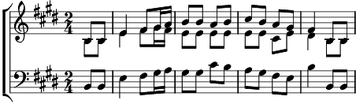

1. Accourez à notre fête
Près des feux de la Saint-Jean.
A danser que l'on s'apprête,
Venez donc tous en chantant.
Tournez, sautez, pleins de joie,
Tenez-vous main dans la main;
De Grandson jusqu'à Vissoie,
Répétez ce gai refrain!
Refrain:
Accourez à notre fête
Près des feux de la Saint-Jean.
A danser que l'on s'apprête,
Venez donc tous en chantant! (bis)
2. Ne restez pas en arrière
Les timides et les grincheux.
Pourquoi donc tant de manières?
Unissez-vous à nos jeux.
Rayonnez d'un grand bonheur,
Oubliez tous vos chagrins;
De Berlin jusqu'à Honfleur,
Reprenez ce gai refrain!
Refrain
3. Entraînez dans votre ronde
Vos amis petits et grands,
Et qu'alors, autour du monde,
Retentisse un même chant.
Tous entrez dans notre danse
Et, de New-York à Pékin,
A Moscou et même en France,
Entonnez ce gai refrain!
Refrain